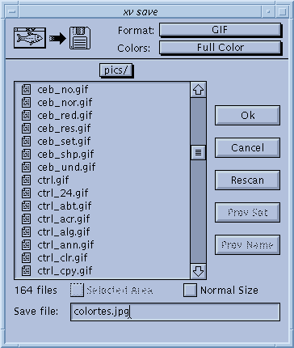

|  | Damned if it doesn't look suspiciously
like the xv load window! The xv save window
lets you write images back to disk, presumably after
you've modified them. You can write images back in many
different formats, not just the original format. Warning! Images are saved as they are currently shown! (i.e. At the current size, with the current color modification, rotation, cropping, etc. applied.) The only exceptions to this rule are if you are displaying images on a 1-bit B/W display, or displaying 24-bit images on a non-24-bit display. The fact that such images have to be dithered in order to be displayed doesn't count as 'modification', and the file won't be saved 'as displayed'. As such, you can manipulate and save color images on a 1-bit display, and 24-bit images on any type of display, even if you can't really see them 'as they are'. |
For the most part, the xv save window operates exactly like the xv load window. (See "The Load Window" for details.) Only the differences are listed here.
When the window is opened, it should have the filename of the currently loaded file already entered into the text entry region. If you click on a file name in the list window, this name will be cleared and replaced with the new name. Likewise, the Format and Colors selections will reflect the currently loaded image. This behavior can be annoying if you are using xv to do file format conversion, or are routinely typing the same filename (a piped command, for instance).
At the top of the window are a pair of pull-down menus, Format and Colors . These menus let you choose the image file format and color settings that will be used when you save the image. Normally, they display the format that the current image is already in. If you change formats, and your filename has a recognized suffix (i.e., '.gif', '.GIF', '.pbm', etc.), the suffix portion of your filename will be replaced with the new, appropriate suffix for the selected format.
You can pipe output from xv to other programs by using the xv save window. If the first character of the specified filename is '!' or '|', the rest of the filename is interpreted as a command to pipe output to, in the currently selected image format. A fine use for this feature is directly printing images to a PostScript printer by selecting 'PostScript' in the formats list, and typing something like " | lpr " as the filename. In this case, xv will create a temporary file, write the PostScript to that file, and cat the contents of that file to the entered command. xv will wait for the command to complete. If the command completed successfully, the xv save window will disappear. If the command was unsuccessful, the window will remain visible. In any event, the temporary file will be deleted.
One important note: If your selection goes 'off-screen' (beyond the boundaries of the xv image window), as can happen when you zoom-in to fine-tune the position of the selection rectangle, your selection will be cropped to the window when you save it, unless you also turn on the Normal checkbox. You can not save expanded areas of the image that are not visible in the xv image window, as such areas don't really exist (they aren't computed).
At the top of the xv save window there is the Colors menu, which contains a list of possible color styles to use when saving the image.. Most file formats support different 'sub-formats' for 24-bit color, 8-bit greyscale, 1-bit B/W stippled, etc. Not all of them do. Likewise, not all 'Color' choices are available in all formats.
In general, the choices in the Colors menu do the following: